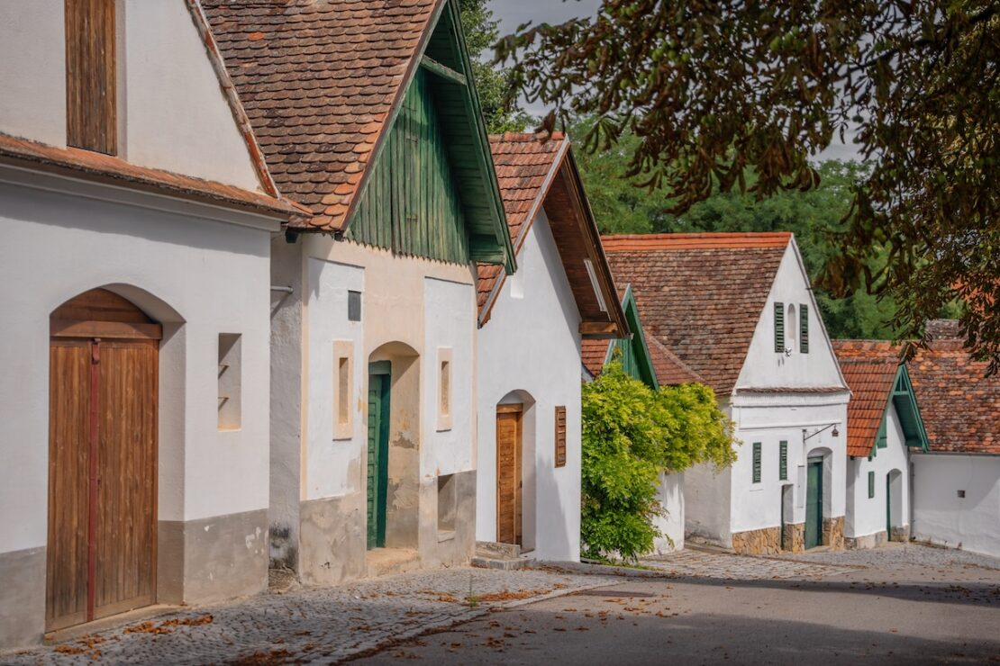
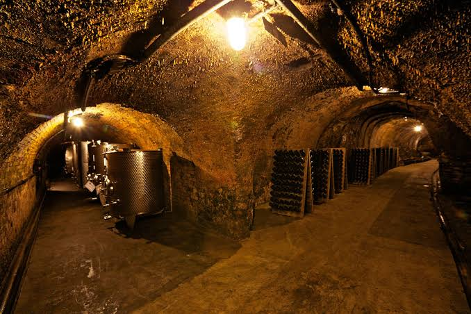

The Historic Kellergassen
Explore the "villages without chimneys". The traditional heart of Weinviertel wine culture.
What is a Kellergasse?
In the Weinviertel, wine cellars were historically built outside the main residential villages along sunken dirt roads. Because these buildings were used exclusively for pressing grapes and storing wine—never for living or cooking—they have no chimneys. Today, there are over 1,100 of these picturesque cellar lanes winding through the Lower Austrian hills.
Anatomy of a Traditional Cellar
A classic Weinviertel wine cellar is divided into three distinct sections, ingeniously designed before modern refrigeration existed:
1. The Press House
(Kellerstöckl)The visible above-ground building. This is where the grapes were brought in after harvest, crushed in wooden wooden wine presses, and fermented.
2. The Cellar Neck
(Kellerhals)A steep, dark, and cool subterranean passageway or staircase that connects the warm above-ground press house to the deep underground storage tubes.
3. The Cellar Tube
(Kellerröhre)Dig deep into the natural loess soil, these tunnels maintain a constant, natural humidity and temperature of 8–10°C year-round. Perfect for aging wine.
Visualizing a Kellergasse
Take a look inside the architecture of a traditional Weinviertel cellar lane—from the above-ground press houses to the deep subterranean storage arches.


Must-Visit Cellar Lanes in Weinviertel
📍 Hadres – Europe's Longest Cellar Lane
Stretching over 1.6 kilometers with more than 400 historic cellars, Hadres is an absolute masterpiece of rural architecture. Every December, it hosts one of Austria's most atmospheric advent markets.
📍 Falkenstein – The "Oagossn"
Located beneath the dramatic ruins of Falkenstein Castle, this sunken cellar lane is famous for its limestone soil. It features a dedicated walking trail where visitors can taste local wines directly from self-service cellar coolers.
📍 Poysdorf – The Wine City
Poysdorf is surrounded by cellar lanes like the "Radyweg" and "Gstetten." It is also home to the "Vino Versum," a museum dedicated entirely to the history of Weinviertel viticulture and cellar architecture.